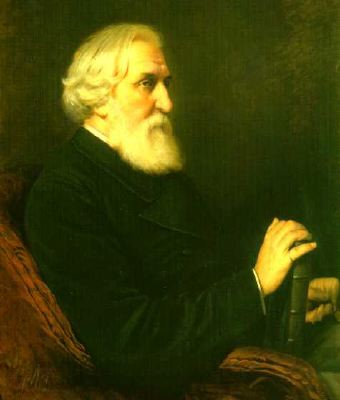

Turgenev
Turgenev

I agree with no one's opinion. I have some of my own.
We Russians have assigned ourselves no other task in life but the cultivation of our own personalities, and when we're barely past childhood, we set to work to cultivate them, those unfortunate personalities.
Ivan Turgenev (1818-1883) was born in Oryol, in the Ukraine region of Russia, into a wealthy family. He studied in Moscow, St.Petersburg, and Berlin and worked for the Russian civil service until he started to succeed as a writer. Unlike his contemporaries, Turgenev by-passed religious matters and focused on social issues instead. His most famous works include Sportsman’s Sketches (1852) and Fathers and Sons (1862). This site is meant to serve as a guide to his biography, his work, his philosophies, and his influences.
Biography:
Contemorary observations of Turgenev This site offers quotes and and journal entrees concerning Turgenev and his work from Henry James, VS Pritchett, Dostoevsky etc.
Henry James on Turgenev: Henry James on Turgenev: based on his own personal experience, James attempts to characterize what "manner of man" Turgenev was.
Turvenev.org An award-winning site on Turgenev, containing a brief biography, a library, and many photos. This is the link to the main site, which is in Russian. Click in the middle of the page to translate. Or, if you want, connect directly to the English portion.
Answers.com This online dictionary/encyclopedia offers a link-laden sketch of Turgenev's life and works. Also, it offers a complete bibliography, links to other entries which mention Turgenev, as well as an artistic photo of his wizened old face, featuring deep-shaded, depressed eyes and long hair, bushy eyebrows and beard- all white.
Books and Writers Brief biography and selected bibiliography of Turgenev's written works.
Turgenev's Bibliography:
Online text of Turgenev's major works
The University of AdelaideClick here for free access to a number of Turgenev's novels and short stories (in English). For the most part, the translations are by Constance Garnett, one of the foremost English interpreters of Turgenev.
Poetry Archive This site offers the following five poems by Turgenev: "The Dog," "Nature," "The Old Woman," "The Skulls," and "The Spihinx."
IMDb The appetite of the true Turgenev lover is merely whetted by reading his books; click here if you are hungry for film versions of Turgenev's works. Some of these films give credit to stories by Ivan Tourgeniev or Iwan Turgenjew, but do not be discouraged, they are all based on the prose of Ivan Turgenev.
Influances:
Nihilismo.com Turgenev is often credited with the popularization of Nihilism, this site briefly traces the roots of the philosophy.
Dictionary of Philosophy: Nihilism
Bazarov's Byronic Roots A helpful page that features an essay titled, "Tracing Byron's Influence on the Creation and Development of the Nihilist Bazarov in Ivan Turgenev's Fathers and Sons," by Daniel L. Hocutt of the University of Richmond. The site also touches on Turgenev's biography, his influance with his contemporary writers, nihilism, romantisim, etc.
Literary Criticism:
Hemingway and Turgenev: A Brief Introduction This piece, comparing Turgenev to Hemingway, is written by Kelley Dupuis. It is a very interesting article, definately worth reading for the serious student of Turgenev, or anyone interested in the history of literature.
Turgeneve and Tolstoy A crude but interesting comparison of Turgenev and Tolstoy. If you can stand poor grammar, this site has contains some intriguing and informative content.
Literary Encyclopedia offers literary critisim of Sportsman's Sketches
Essays On Russian Novelists This is a link to a lengthy, quotation-riddled, and sophisticated essay about Turgenev, which places him in the greater scheme of Russian Literature. It is accompanied by the rest of the collection it belongs to, "Essays On Russian Novelists," by William Loyd Phelps.